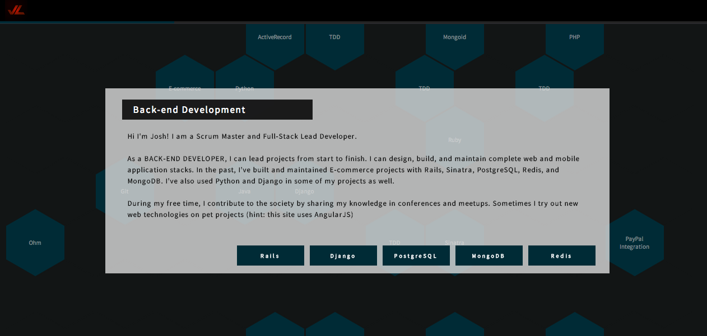
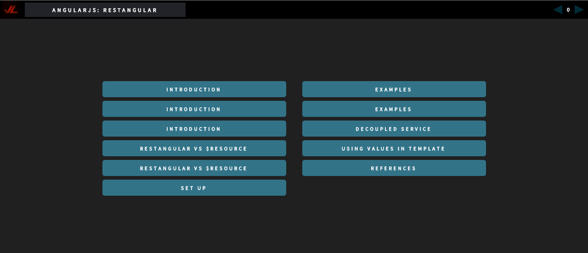

New Look
I decided to start off 2015 with an upgrade of my website. I made use of GitHub pages to build a static website since it was free per GitHub account.

I built the site using AngularJS, Bower, Prism.js, and CSS3 Transitions. You can view the source code of the website here.
JLSlides
I've also included my own JavaScript Presentation Framework called JLSlides so I can compile all my slides in one location. Here's one of my recent presentations using JLSlides. You can view the slides here.

Slides are easy to make using JLSlides. I used AngularJS directives to simplify the markup content. Prism.js takes care of syntax highlighting of the code samples.
<slide title="Restangular vs $resource" link="restangular-vs-resource" page="1">
The <blue>$resource factory</blue> takes away the pain of writing
<br />boilerplate code using <blue>$http</blue>
<br /><br /><blue>$resource</blue> does not let you do much once the
data is transferred to <br />the JavaScript application and any custom
behavior will <br />require a lot of boilerplate code
</slide>
You can view the source code of the project here.
Moving Forward
Over the next couple of weeks, I'll be adding more content to the site. Feel free to email me at joshua.arvin.lat@gmail.com if you have questions or suggestions.